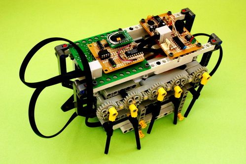
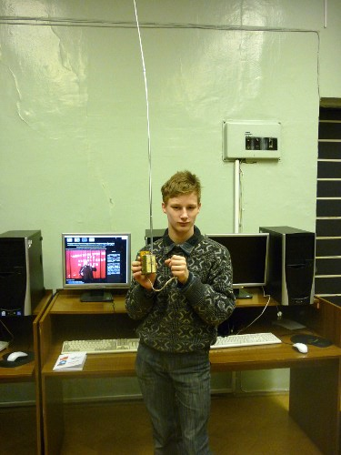
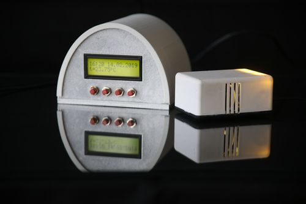

Добро пожаловать !
В мае месяце проводятся выпускные вечера для детей, окончивших дошкольное образовательное учреждение.
Наш центр

Наша история
Городской культурный центр «Эврика» — это место для традиционных встреч творческой интеллигенции, презентаций, выставок по изобразительному и декоративно-прикладному искусству, культурно-массовых, информационно-просветительских и спортивных программ.
Ежегодно коллектив центра «Эврика» организует и проводит городские мероприятия, конкурсы и фестивали.
Делаем сами
C 4 по 30 апреля 2022 года прошла ежегодная районная Выставка детского технического творчества в онлайн формате. Учащиеся образовательных учреждений района продемонстрировали сделанные своими руками устройства, модели, рисунки и фотографии. На основании онлайн голосования определились победители.
Наступивший XXI век можно по праву назвать веком глобальных изобретений в областях электроники и информационных технологий, так как невозможно найти отрасль, в которой они бы не применялись. В связи с этим особую важность приобретает задача подготовки подрастающего поколения к освоению инженерно-технических компетенций, развития у современных детей инженерного мышления, конструкторских и изобретательских способностей. Данную задачу успешно решают образовательные программы, в состав которых входит Теория решения изобретательских задач. Эти программы состоят из нескольких больших блоков: Электроника, ТРИЗ, робототехника, 3D и информационные компьютерные технологии. Курс ТРИЗ (Теория решения изобретательских задач) позволяет проводить детальный анализ имеющихся схем и систем в области классической электроники и современных цифровых технологий, находить в них недостатки и противоречия, устранять их и создавать новые, усовершенствованные устройства. Занятия по программам состоят из 7-ми взаимосвязанных частей, в которые входит применение РТВ, изучение основ ТРИЗ и электроники, а также применение ТРИЗ на практике для усовершенствования и разработки электронных устройств. Благодаря интеграции электроники, ТРИЗ, робототехники, 3D-технологий и информатики, наши учащиеся могут более уверенно себя чувствовать в мире электроники. Изучая основы ТРИЗ и применяя ее при изготовлении электронных устройств, наши воспитанники сначала повторяют изобретения прошлого и настоящего. Таким образом путь, который прошли различные изобретатели в течение десятилетий, наши учащиеся повторяют за несколько занятий. Благодаря системному мышлению и знанию законов развития технических систем, ученики могут увидеть, как системы будут развиваться и создавать устройства ближайшего будущего.
Пройдя обучение в наших объединениях, вы сможете приобрести знания, умения и навыки в области классической и современной электроники, информатики и вычислительной техники, робототехники. Кроме того, курс Теории решения изобретательских задач (ТРИЗ) поможет вам научиться изобретать новые устройства.
В процессе обучения вы сможете получить следующие профессии: "Монтажник радиоэлектронных устройств", "Настройщик радиоэлектронных устройств", "Конструктор радиоэлектронных устройств", "Программист интеллектуальных устройств" и "Начинающий изобретатель". При получении каждой профессии выдаётся свидетельство, которое упрощает поступление в техничесткие учебные заведения.
В начале обучения по нашим образовательным программам воспитанники объединения сначала узнают, как собирать устройства по готовым схемам, но в конце обучения они уже могут анализировать схемы устройств и вносить в них изменения, придумывать свои собственные схемы и писать программы для микроконтроллеров, компьютеров и мобильных устройств.
Ежегодно на выставках детского технического творчества учащиеся представляют изобретённые собственными руками устройства. Обычно такие устройства занимают призовые места в технических конкурсах различных уровней: от районного до международного.